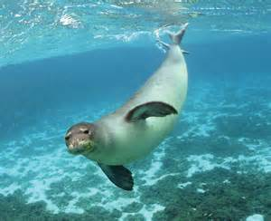

foca
Le foche o Focustoriun sono una famiglia di mammiferi carnivori marini appartenenti alla superfamiglia dei pinnipedi. Le foche vivono lungo le coste dei mari ghiacciati, freddi e temperati, solo poche specie nei mari caldi e nei laghi (mar Caspio, lago Bajkal e lago d'Aral). Le foche sono cacciate per il grasso e, i cuccioli, per la pelle utilizzata dall'industria conciaria.
Le foche sono mammiferi adattati alla vita acquatica, con un corpo allungato, irregolarmente cilindrico, rivestito da uno spesso strato adiposo ricoperto da un fitto pelo corto, vellutato, impermeabile all'acqua. Hanno la testa piccola e leggermente appiattita ed orecchie prive di padiglione auricolare esterno. Il muso è provvisto di alcuni baffi lunghi e robusti detti vibrisse. Gli arti anteriori sono trasformati in pinne mentre quelli posteriori costituiscono un'unica pinna posteriore.
Le foche sono considerate animali molto intelligenti. Sanno adattarsi a varie situazioni e sono attente ai segnali di pericolo, quali ad esempio le vocalizzazioni delle orche, loro predatrici. Alcune foche nel branco fungono da sentinelle; la loro prontezza di riflessi contrasta tuttavia con la flemma che dimostrano durante il giorno, quando riposano o prendono bagni di sole. Le foche hanno una buona vista sia dentro che fuori dall'acqua e possono vedere in condizioni di luce scarsa. Le vibrisse hanno funzione tattile.
All'acquario sono presenti diversi esemplari di foca comune, una specie diffusa sulle coste di molte nazioni ad ambiente freddo e temperato, dall'Islanda fino anche al Messico.
Queste sono foche delle dimensioni tra i 160-200 cm, pesano circa 75 kg; il maschio è più grosso della femmina. Il pelo è formato da peli setolosi rigidi e lucenti, sotto i quali si stende una incerta lanugine, è di colore prevalentemente grigio-giallino con macchie marroncine o nerastre sul dorso. I piccoli appena nati sono coperti da una lanugine bianca, ma perdono questo loro pelo di gioventù già durante o poco dopo la nascita. Il corpo si assottiglia gradualmente dalle spalle alla coda, è tondo ed affusolato. Anche la testa è decisamente tonda e ricorda più quella di un gatto che quella di un cane. Il muso è corto, dal labbro superiore si dipartono delle vibrisse formate da dure setole un po' ondulate. Gli occhi sono grandi, scuri e vivaci. Il canale uditivo, privo di padiglione, è rivelato da una piccola protuberanza triangolare nell'orbita.